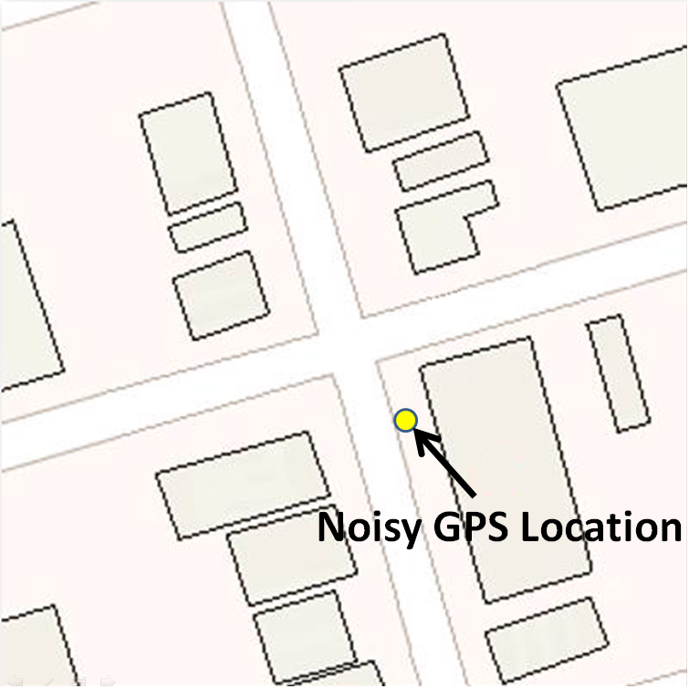
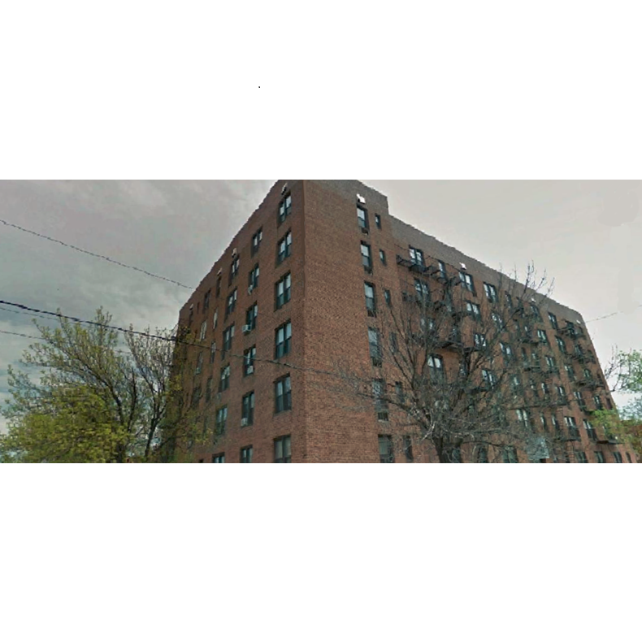
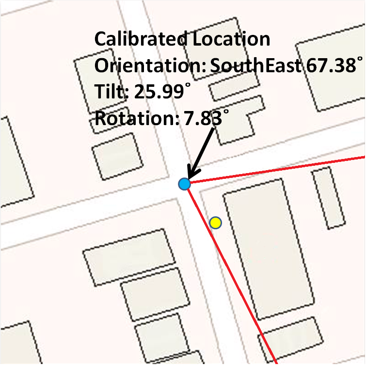
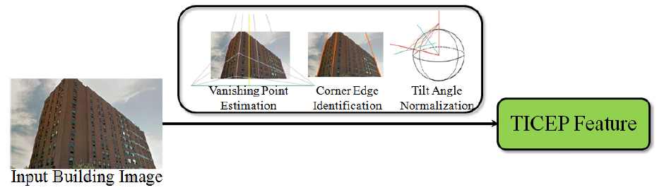
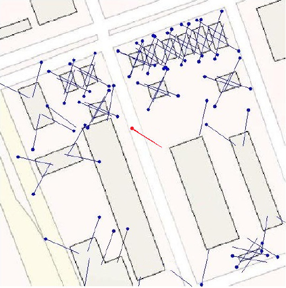
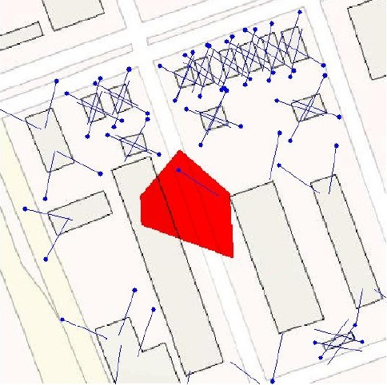

GPS Refinement and Camera Orientation Estimation from a Single Image and a 2D Map
Goal
Improve GPS accuracy by a building photo and a 2D map in urban environments.
Example: GPS tells me a location, but with several meters inaccuracy. If I also have a photo and the map,
I know only at certain positions could I see a building looks like that, then I can probably find out where
am I more accurately.



Method
Step 1: Find vertical building edges in the photo, represent them in a tilt-invariant way: Tilt-Invariant Vertical Edge
Position (TICEP) features.

Step 2: We don't know (and we can't know for sure) which building the camera looks at. So for each building, compute
Location-Orientation Hypotheses (LOHs) as if it is the building in the photo.
Example: all LOHs (blue), and the correct one (red):

Step 3: Remove unreasonable LOHs, then select the one nearest to the noisy GPS reading. And that's our final result!
Note: not guaranteed to 100% find better position than GPS, but generally speaking achieves better accuracy.
Example: The correct LOH (much more accurate than GPS as geometry doesn't lie!) can be selected as long as GPS falls
into the red area (the refinable area).

References
[1] Hang Chu, Andrew Gallagher, and Tsuhan Chen, GPS Refinement and Camera Orientation Estimation from a Single Image and a 2D Map, Workshop on Mobile Vision, IEEE Computer Vision and Pattern Recognition (CVPR), 2014. [pdf]